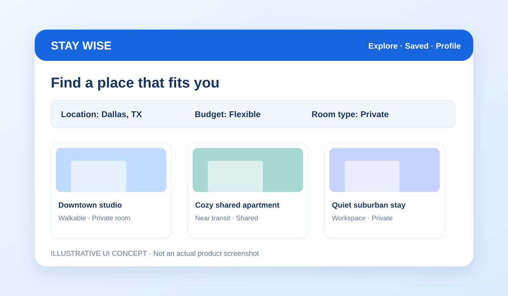

Designing a More Human Housing Search with StayWise
What natural-language search changes about a housing discovery experience, and why user-centered design matters.
Read article →Articles on software engineering, frontend development, and machine learning, based on projects I have worked on and technical concepts I study.

What natural-language search changes about a housing discovery experience, and why user-centered design matters.
Read article →
Why simple interfaces, component structure, and reliable development tools matter in invoice management.
Read article →
A practical introduction to graph representations, GCN autoencoders, anomaly scores, and evaluation.
Read article →